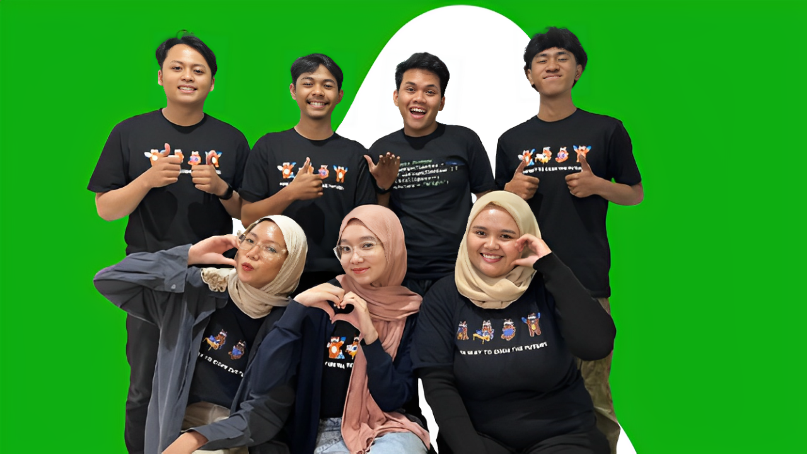

Company Profile
"One Stop Clothing Center – Find Your Style, Show Your Passion!"

Timedoor Store berdiri pada tahun 2024 dengan komitmen untuk menyediakan produk pakaian berkualitas tinggi yang menggabungkan kenyamanan dan gaya modern. Sebagai perusahaan yang berfokus pada clothing line, kami terus menghadirkan inovasi dalam desain dan material, khususnya dengan koleksi kaos 100% katun bertema coding yang menarik dan unik. Kami percaya bahwa pakaian adalah cara untuk mengekspresikan identitas, dan Timedoor Store hadir sebagai wadah bagi Anda yang ingin menunjukkan minat dan semangat dalam dunia teknologi.